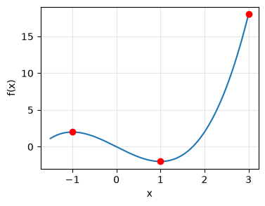
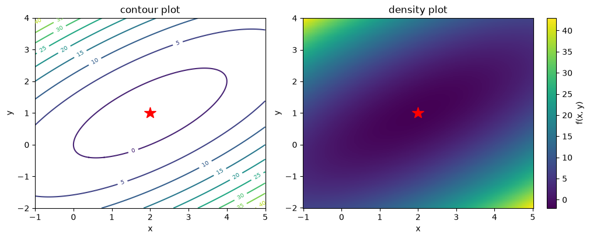

Introduction to Optimization: Max and Min#
Optimization = find the input where a function is smallest (minimum) or largest (maximum).
exact (SymPy) |
numerical (NumPy / SciPy) |
|
|---|---|---|
one variable \(f(x)\) on \([a, b]\) |
solve \(f'(x) = 0\), compare with endpoints |
grid search, |
several variables \(f(x, y)\) |
solve \(\nabla f = \mathbf{0}\), Hessian test |
grid search, |
Maximize = minimize the negative: \(\max f = -\min(-f)\). The numerical tools only minimize.
import sympy as sp
import numpy as np
from scipy.optimize import minimize_scalar, minimize
import matplotlib.pyplot as plt
from IPython.display import display
Part A. One variable#
To find the max and min of \(f\) on \([a, b]\):
Find the critical points: solve \(f'(x) = 0\) and keep those in \([a, b]\).
Evaluate \(f\) at the critical points and at the endpoints \(a\), \(b\).
The largest value is the max; the smallest is the min.
Second derivative test at a critical point \(x_0\): \(f''(x_0) > 0\) → local min; \(f''(x_0) < 0\) → local max.
Example. \(f(x) = x^3 - 3x\) on \([-\tfrac32, 3]\).
x = sp.symbols("x")
f = x**3 - 3*x
a, b = sp.Rational(-3, 2), 3
df = sp.diff(f, x)
crit = sp.solve(df, x)
print("f'(x) =", df, " critical points:", crit)
for p in crit:
print(f"x = {p}: f = {f.subs(x, p)}, f'' = {sp.diff(f, x, 2).subs(x, p)}")
for p in [a, b]:
print(f"endpoint x = {p}: f = {f.subs(x, p)}")
f'(x) = 3*x**2 - 3 critical points: [-1, 1]
x = -1: f = 2, f'' = -6
x = 1: f = -2, f'' = 6
endpoint x = -3/2: f = 9/8
endpoint x = 3: f = 18
\(x = -1\): local max (\(f'' < 0\)), \(f = 2\).
\(x = 1\): local min (\(f'' > 0\)), \(f = -2\) → the min.
Endpoint \(x = 3\): \(f = 18\) → the max. The local max at \(x = -1\) is not the max on the interval.
NumPy: grid search. Evaluate \(f\) at many points and pick the smallest/largest value.
xs = np.linspace(-1.5, 3, 1001)
fx = xs**3 - 3*xs
print("min: x =", xs[np.argmin(fx)], " f =", fx.min())
print("max: x =", xs[np.argmax(fx)], " f =", fx.max())
fig, ax = plt.subplots(figsize=(4, 3))
ax.plot(xs, fx)
ax.plot([-1, 1, 3], [2, -2, 18], "ro")
ax.set_xlabel("x"); ax.set_ylabel("f(x)"); ax.grid(alpha=0.3)
plt.show()
min: x = 1.0019999999999998 f = -1.999987992
max: x = 3.0 f = 18.0

SciPy: minimize_scalar searches inside \([a, b]\). To maximize, minimize \(-f\).
Caution: it finds a local min and may miss the endpoints.
fn = lambda t: t**3 - 3*t
res = minimize_scalar(fn, bounds=(-1.5, 3), method="bounded")
print("min: x =", res.x, " f =", res.fun)
res = minimize_scalar(lambda t: -fn(t), bounds=(-1.5, 3), method="bounded")
print("max: x =", res.x, " f =", -res.fun, " <- local max only; the true max is at x = 3")
min: x = 0.9999992918200414 f = -1.9999999999984954
max: x = -1.0000015400115538 f = 1.999999999992885 <- local max only; the true max is at x = 3
Part B. Several variables#
For \(f(x, y)\):
Critical points: solve \(\nabla f = \mathbf{0}\), i.e. \(f_x = 0\) and \(f_y = 0\) together.
Hessian test. The Hessian is the matrix of second derivatives $\( H = \begin{pmatrix} f_{xx} & f_{xy} \\ f_{xy} & f_{yy} \end{pmatrix}, \qquad \begin{cases} \det H > 0,\ f_{xx} > 0 & \text{local min} \\ \det H > 0,\ f_{xx} < 0 & \text{local max} \\ \det H < 0 & \text{saddle point (neither)} \\ \det H = 0 & \text{test fails} \end{cases} \)$
Example. \(f(x, y) = x^2 + 2y^2 - 2xy - 2x\).
x, y = sp.symbols("x y")
f = x**2 + 2*y**2 - 2*x*y - 2*x
grad = [sp.diff(f, x), sp.diff(f, y)]
print("gradient:", grad)
crit = sp.solve(grad, [x, y], dict=True)
print("critical points:", crit)
H = sp.hessian(f, (x, y))
display(H)
for p in crit:
Hp = H.subs(p)
print(p, " f =", f.subs(p), " det H =", Hp.det(), " f_xx =", Hp[0, 0])
gradient: [2*x - 2*y - 2, -2*x + 4*y]
critical points: [{x: 2, y: 1}]
{x: 2, y: 1} f = -2 det H = 4 f_xx = 2
\(\det H = 4 > 0\) and \(f_{xx} = 2 > 0\): a minimum at \((2, 1)\) with \(f = -2\).
A saddle point. \(g(x, y) = x^2 - y^2\) has \(\nabla g = \mathbf{0}\) at the origin, but it goes up along \(x\) and down along \(y\): neither a max nor a min.
g = x**2 - y**2
print("critical points:", sp.solve([sp.diff(g, x), sp.diff(g, y)], [x, y], dict=True))
print("det H =", sp.hessian(g, (x, y)).det())
critical points: [{x: 0, y: 0}]
det H = -4
NumPy: picture and grid search. np.meshgrid makes a grid of \((x, y)\) points. Two ways to picture \(f\):
contour plot (
ax.contour): the level curves \(f = \) const,density plot (
ax.pcolormesh): each point coloured by its value of \(f\); the colorbar (fig.colorbar) shows which colour means which value.
plt.subplots(1, 2) gives a figure with two axes side by side.
xs = np.linspace(-1, 5, 301)
ys = np.linspace(-2, 4, 301)
X, Y = np.meshgrid(xs, ys)
F = X**2 + 2*Y**2 - 2*X*Y - 2*X
i = np.argmin(F) # position in the flattened grid
print("grid min: x =", X.flat[i], " y =", Y.flat[i], " f =", F.flat[i])
fig, (ax1, ax2) = plt.subplots(1, 2, figsize=(10, 4), layout="constrained")
cs = ax1.contour(X, Y, F, levels=10, cmap="viridis")
ax1.clabel(cs, fontsize=7)
# fig.colorbar(cs, ax=ax1, label="f(x, y)")
ax1.set_title("contour plot")
pm = ax2.pcolormesh(X, Y, F, cmap="viridis", shading="auto")
fig.colorbar(pm, ax=ax2, label="f(x, y)")
ax2.set_title("density plot")
for ax in (ax1, ax2):
ax.plot(2, 1, "r*", markersize=15)
ax.set_xlabel("x"); ax.set_ylabel("y")
plt.show()
grid min: x = 2.0 y = 1.0 f = -2.0

SciPy: minimize(fun, x0). The function takes one array v holding all the variables: v[0] is \(x\), v[1] is \(y\). x0 is a starting guess. It works the same way for any number of variables. To maximize, minimize \(-f\).
fn = lambda v: v[0]**2 + 2*v[1]**2 - 2*v[0]*v[1] - 2*v[0]
res = minimize(fn, x0=[0, 0])
print("x, y =", res.x, " f =", res.fun)
x, y = [1.99999988 0.99999999] f = -1.9999999999999867
Summary#
SymPy |
NumPy / SciPy |
|
|---|---|---|
derivative |
|
|
critical points, 1 variable |
|
|
critical points, 2 variables |
|
|
Hessian |
|
|
grid search |
|
|
plots |
|
|
min of \(f(x)\) on \([a, b]\) |
compare critical points and endpoints |
|
min of \(f(x, y)\) |
|
|
maximize |
minimize \(-f\) |
minimize \(-f\) |
Exercises#
Solve with SymPy (exact) and with NumPy/SciPy (numerical).
Syntax you will need:
task |
SymPy |
NumPy / SciPy |
|---|---|---|
variables |
|
|
derivative |
|
|
solve equations |
|
|
substitute |
|
|
Hessian |
|
|
matrix entry, transpose |
|
|
determinant |
|
|
function of one variable |
|
|
function of several variables |
|
|
grid of points |
|
|
2D grid |
|
|
position of min / max |
|
|
figure with 1 panel |
|
|
line plot |
|
|
contour plot |
|
|
density plot |
|
|
colorbar |
|
|
min of \(f(x)\) on \([a, b]\) |
|
|
min of \(f(x, y)\) |
|
Exercise 1 (one variable). Let \(f(x) = x^3 - 6x^2 + 9x\) on \([-1, 5]\).
(a) In SymPy, find the critical points and classify them with \(f''\). Compare with the endpoints to find the max and min.
(b) Check with NumPy on a grid, and with minimize_scalar. Does minimize_scalar find the true max and min?
# Exercise 1
Exercise 2 (two variables, minimum). Let \(f(x, y) = x^2 + xy + y^2 - 3x\).
(a) In SymPy, find the critical point and the Hessian, and classify the point.
(b) Check with SciPy’s minimize, starting from \((0, 0)\).
# Exercise 2
Exercise 3 (two variables, maximum). Let \(f(x, y) = 8x + 4y - 2x^2 - 2xy - y^2\).
(a) In SymPy, find the critical point and use the Hessian test to show it is a maximum.
(b) Find the max with SciPy’s minimize (minimize \(-f\)). Make a contour plot or a density plot, and mark the point.
# Exercise 3